Running
Home engineering / steam bending / curved walls
Curving Skirting Board
Because I built a house with curved walls. A normal length of skirting board took one look at the curve and declined to cooperate, so the answer became: build a steam box, bend the timber, fix it while it still remembered the shape, then make the whole thing look like it was obvious.
It is a small domestic detail on the surface, but underneath it is all geometry, moisture, heat, timing, clamps, wall fixings and the quiet terror of snapping the piece after all that work.
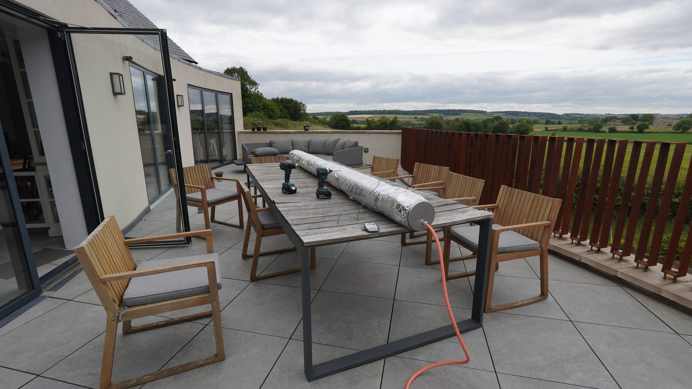
Steam box
First, make the timber sauna.
The problem was not just bending the skirting. It was getting heat and moisture into a long piece of timber evenly enough that it could be persuaded around the wall without splitting, springing back, or becoming expensive firewood.
First fit
Offer it up before it changes its mind.
Fixing
The curve becomes part of the wall.
Finishing
Back to the workshop for the last persuasion.
The constraint
Straight timber, curved house.
The wall was already curved, because the house was designed that way. The skirting had to follow the architecture rather than fight it, which turned a trim job into a bending problem.
The method
Heat buys time.
Steam bending works by briefly making the timber more compliant. The awkward bit is that the clock starts as soon as it comes out of the box, so the wall, tools and fixings all have to be ready.
The house
The drawings live in a repo, obviously.
This sits inside the wider house-build story, including the drawings and design work in the ChadHouse repo. Curved walls are lovely. They also send you outside to build strange foil tubes.
The payoff
It looks like a normal detail.
That is the slightly unfair reward: if the job is done well, most people just see skirting board. The effort disappears into the room, which is annoying and also exactly the point.
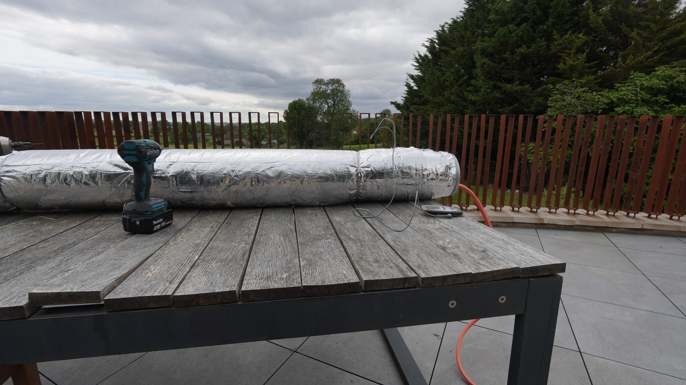
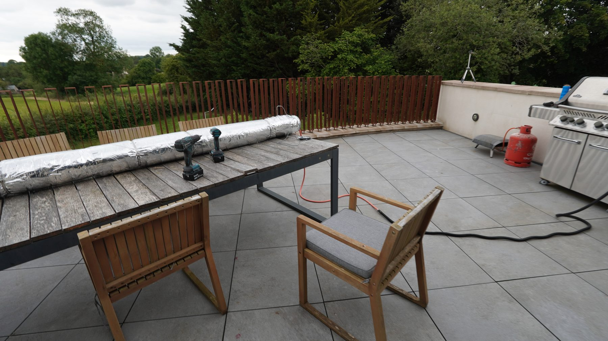
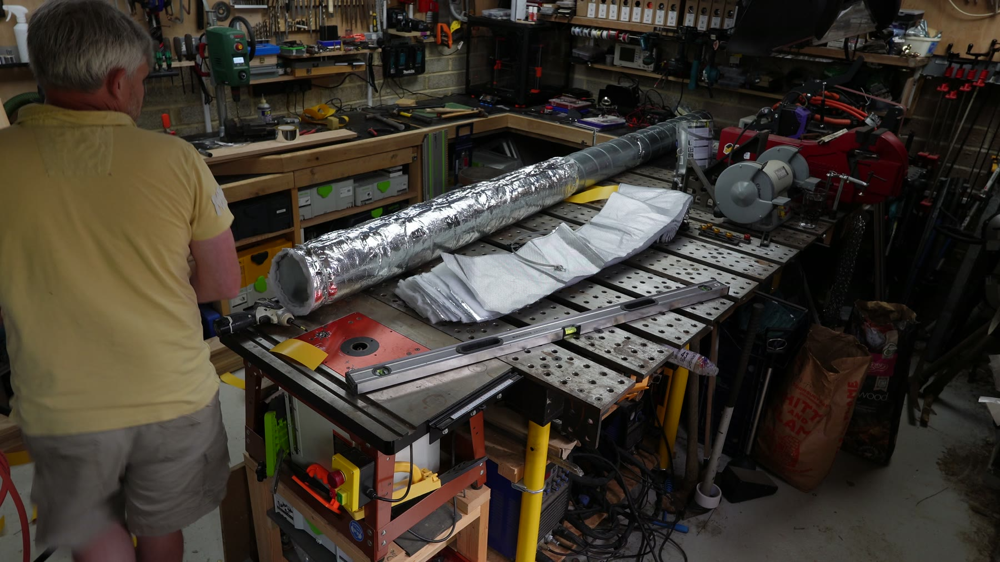
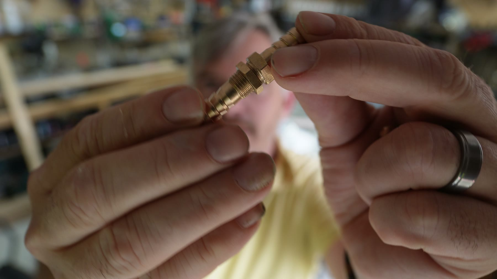
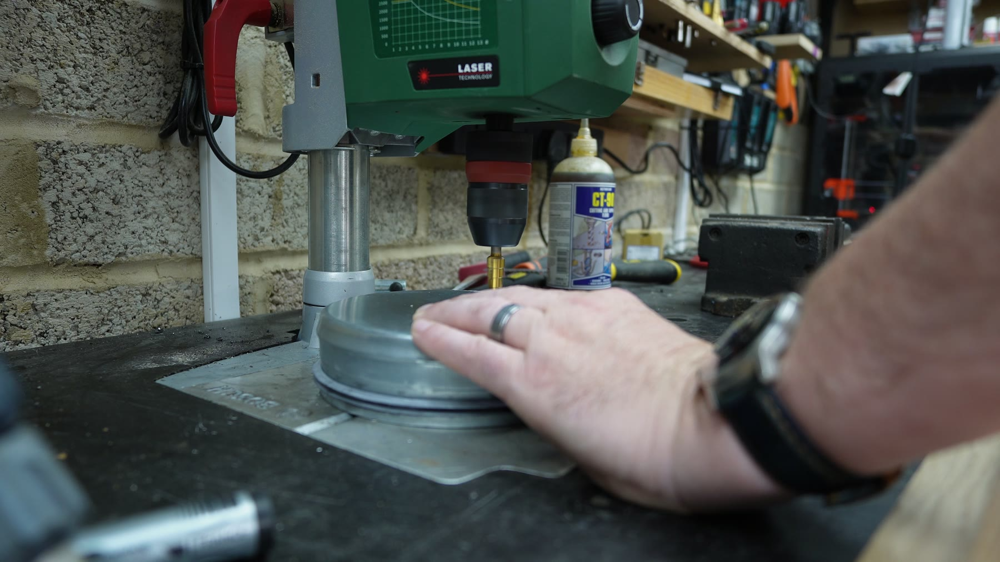
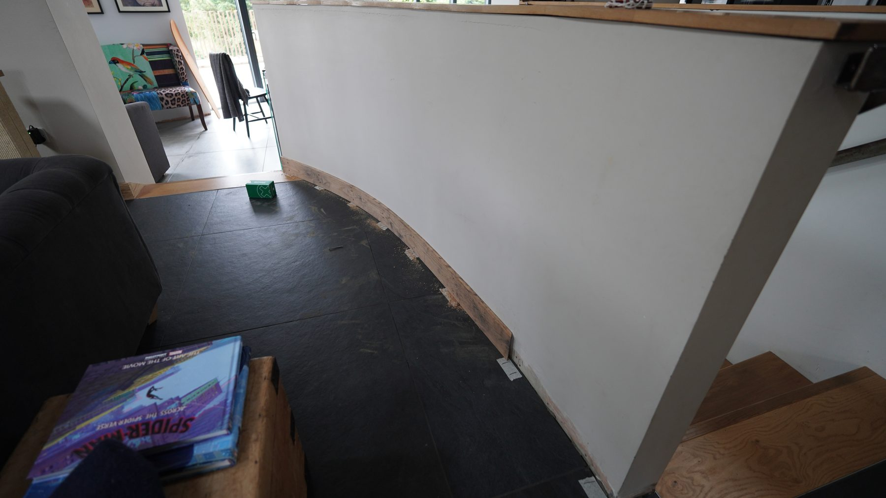
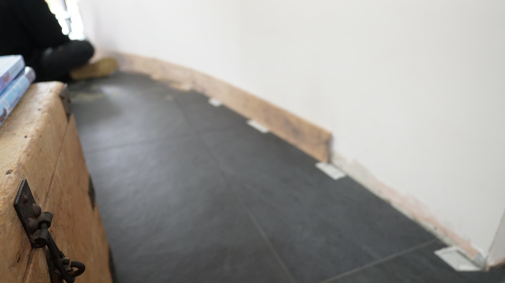
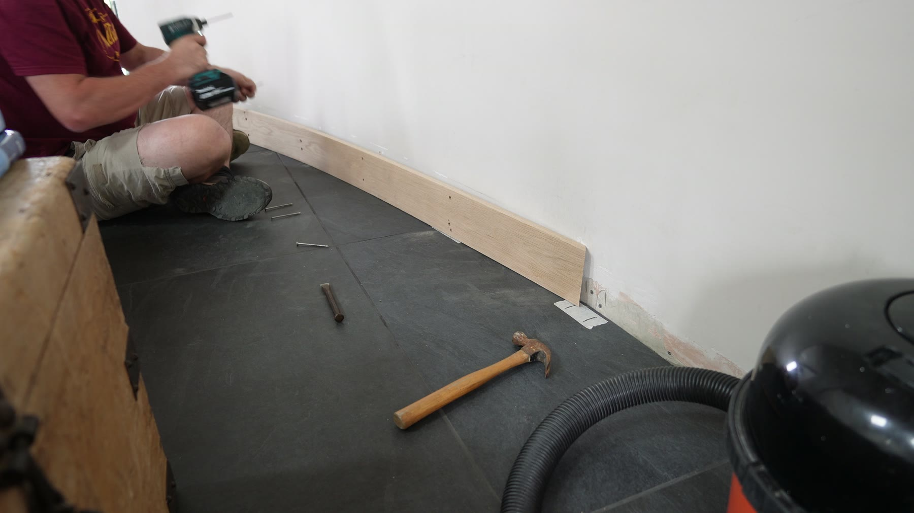
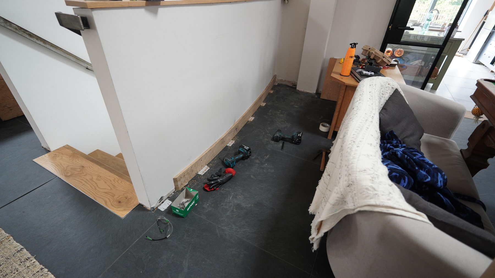
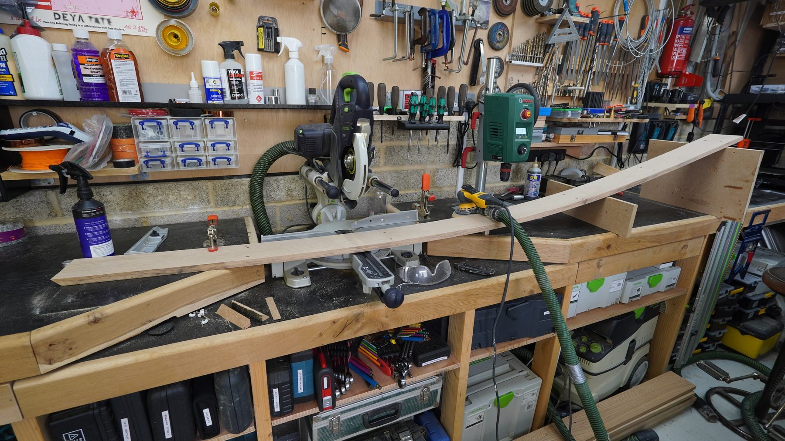
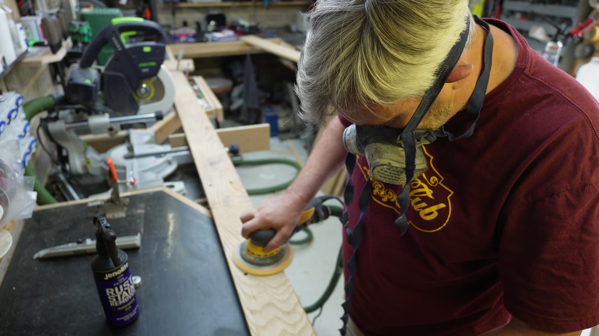